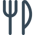
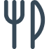

Hej! Mit navn er Hui-jin og jeg kommer fra Sydkorea. For at vise min personlighed
og
kompetencer gennem mit CV, har jeg valgt tre nøgleord:
Creativ, Learner og Adventurous
Jeg nyder at udforske
og erfare nye ting, og jeg stræber konstant efter at lære og udfordre mig selv.


I mine tidligere projekter har jeg bestræbt mig på at tilgå dem på en kreativ måde og
skabe
resultater gennem læring. At flytte fra Korea til Danmark har været en stor udfordring, men denne
oplevelse
har givet mig muligheden for at lære om en ny kultur og et nyt sprog. Jeg tror, at denne erfaring vil
være
en stærk drivkraft for fleksibilitet og diversitet i mit fremtidige designarbejde.
 
